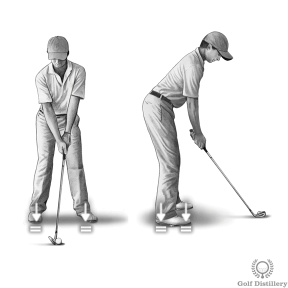

올바른 골프 자세

정확한 스탠스 너비를 확인하려면 클럽을 사용하여 어깨 너비를 측정하세요. 그런 다음 모든 풀 샷을 위해 발 안쪽이 최소한 이만큼 떨어져 있는지 확인하십시오 .
--------------------------------------------------------------------------------------------------------------

페어웨이 우드와 같은 긴 클럽과 드라이버의 경우 스탠스를 넓힙니다(발 안쪽이 어깨 너비보다 2~3인치 더 넓음).
--------------------------------------------------------------------------------------------------------------

숏아이언과 웨지의 경우 스탠스 폭을 1~2인치 정도 줄이세요. 풀샷 미만의 경우(예: 피칭 및 치핑에는 넓은 스탠스가 필요하지 않습니다).
--------------------------------------------------------------------------------------------------------------

너무 많은 각도로 발가락을 가리키지 마십시오. 뒷발은 타깃 라인과 직각을 이루어야 합니다. 앞발은 바깥쪽으로 기울어질 수 있지만 약간만 가능합니다.
--------------------------------------------------------------------------------------------------------------

무릎은 가볍게 구부려야 하지만 구부리지 않아야 합니다.
--------------------------------------------------------------------------------------------------------------

대부분의 샷에서는 체중이 발가락과 발뒤꿈치 사이에 50/50, 왼발과 오른발 사이에 50/50으로 분산되어야 합니다.
--------------------------------------------------------------------------------------------------------------